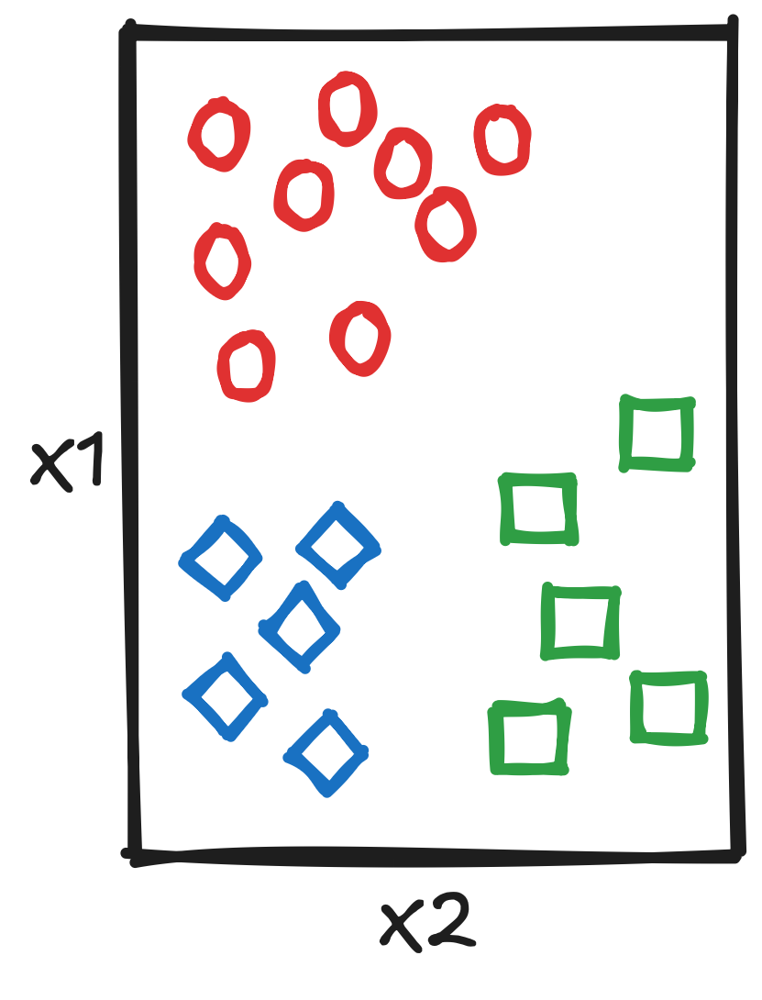
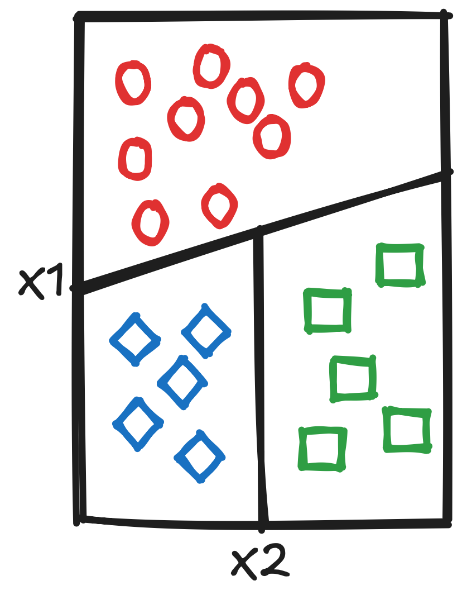
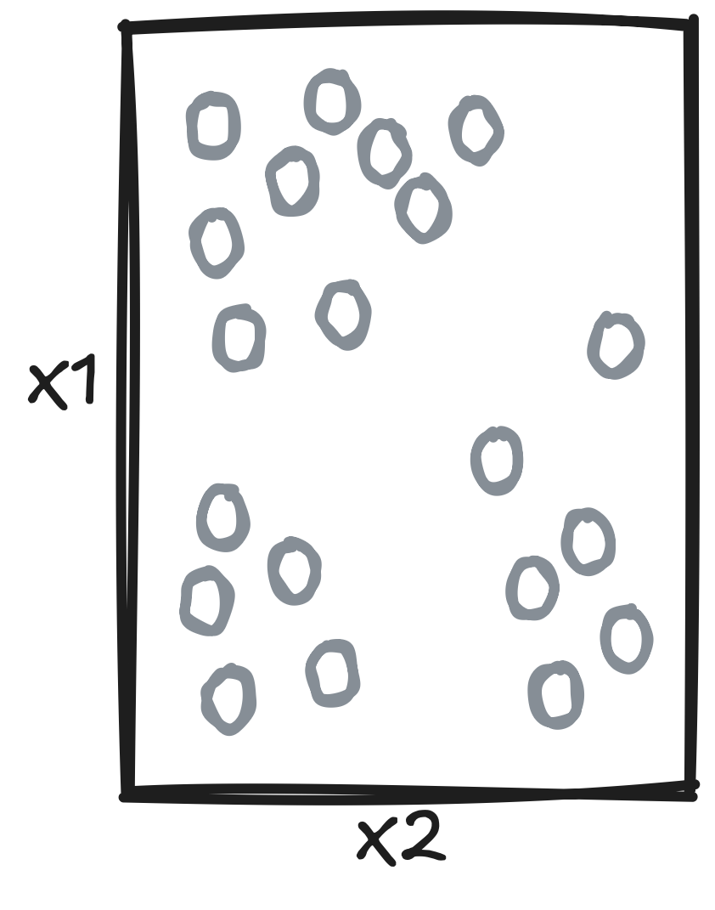
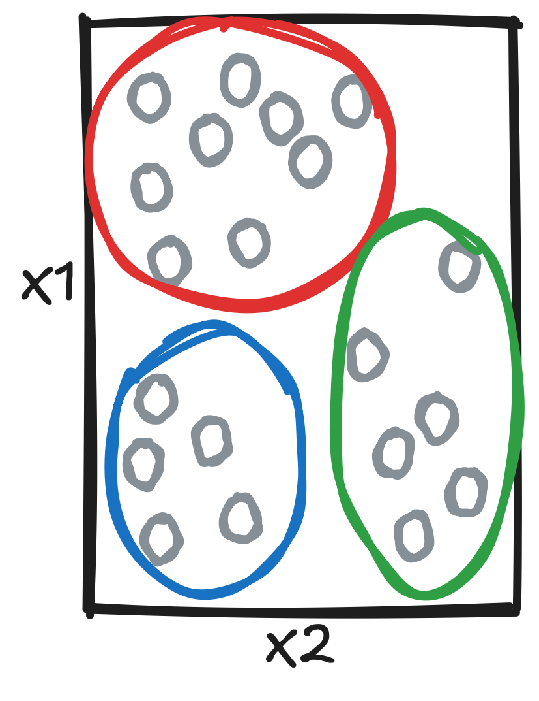
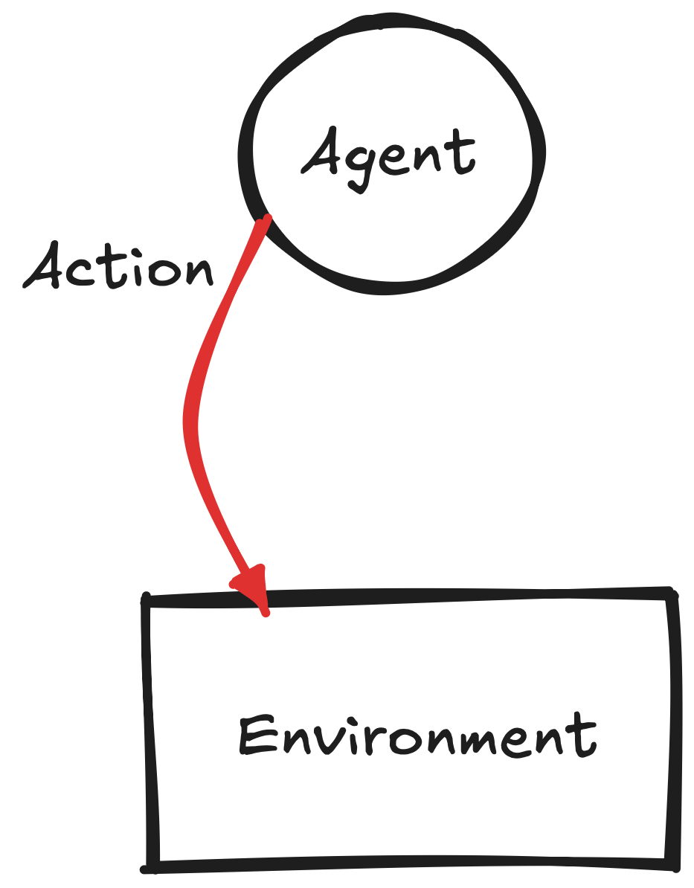
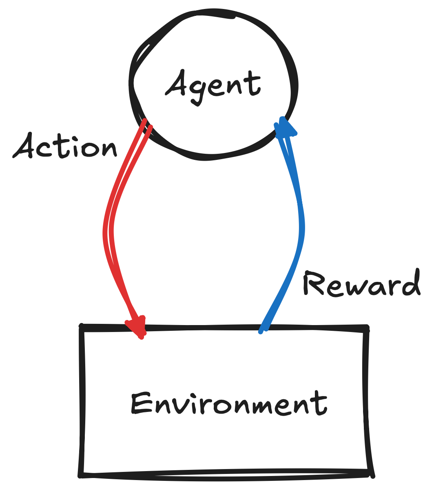
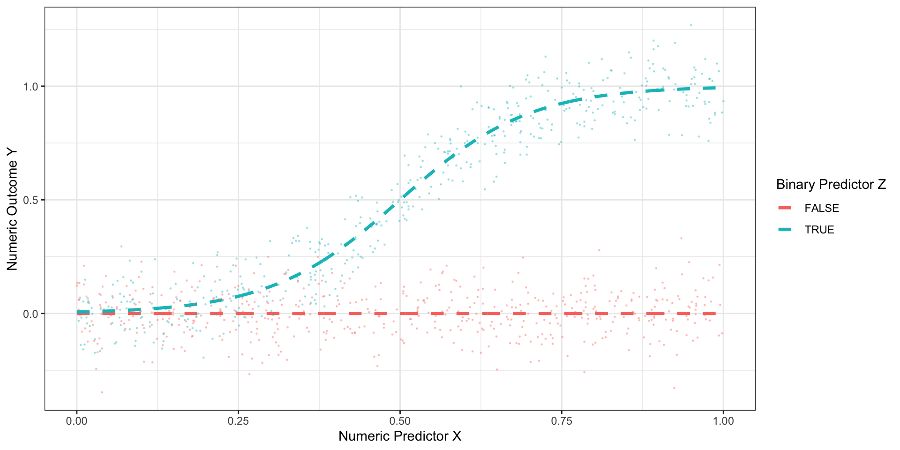

| X1 | X2 | y |
|---|---|---|
| 0.8691978 | 5.649843 | 2 |
| 2.2093103 | 4.026607 | 2 |
| -0.5349550 | 4.623729 | 1 |
| -1.5422525 | 5.185111 | 0 |
| -0.1571482 | 5.036193 | 2 |
| -0.6988967 | 3.967647 | 1 |
An invitation to Supervised Machine Learning with TreesNovember 10, 2025
Understand the basic ingredients of Supervised Machine Learning:
Understand how classification and regression trees work:
Machine learning is usually divided into three categories
Supervised learning


Input \(\rightarrow\) Output
Unsupervised learning


Input \(\rightarrow\) Structure
Reinforcement learning


Action \(\rightarrow\) Reward \(\rightarrow\) Action'
Training: showing the machine a collection of examples that includes the correct solution
| X1 | X2 | y |
|---|---|---|
| 0.8691978 | 5.649843 | 2 |
| 2.2093103 | 4.026607 | 2 |
| -0.5349550 | 4.623729 | 1 |
| -1.5422525 | 5.185111 | 0 |
| -0.1571482 | 5.036193 | 2 |
| -0.6988967 | 3.967647 | 1 |
A common error metric is the Mean Squared Error:
\[ MSE = \frac{1}{n} \sum_i^n (y_i - \hat{y_i})^2 \]
Lesson 1: the basic ingredient of SL is labelled dataGoal: building a prediction machine (Input \(\rightarrow\) Output)
For example, we could assume that the relationship between our inputs (\(X\)) and the output (\(y\)) is linear, and fit something like:
\[ y_i = \alpha + \beta_1 X_1 + \beta_2 X_2 + \epsilon_i \]

Lesson 2: the focus of SL is predicting the correct outputTesting: assessing how good our predictions are in unseen examples
newData so we can test newInput \(\rightarrow\) newOutputExplain train / test split
Explain K-fold CV
Lesson 3: the key to good SL is testing our predictionsRisk of overfitting
Better for non linear relationships
Explainability
Heterogeneous treatment effects
The good news: you have already been doing it!
Regression: predict numerical outcome
reg <- lm(y ~ X, data = Data) summary(reg)
Call:
lm(formula = y ~ X)
Residuals:
Min 1Q Median 3Q Max
-0.82374 -0.69325 -0.40559 0.08469 2.43877
Coefficients:
Estimate Std. Error t value Pr(>|t|)
(Intercept) -0.1902 0.3803 -0.500 0.63056
X 2.3121 0.3731 6.197 0.00026 ***
---
Signif. codes: 0 '***' 0.001 '**' 0.01 '*' 0.05 '.' 0.1 ' ' 1
Residual standard error: 1.115 on 8 degrees of freedom
Multiple R-squared: 0.8276, Adjusted R-squared: 0.8061
F-statistic: 38.41 on 1 and 8 DF, p-value: 0.0002602Classification: predict categories
class <- glm(y ~ X, data = Data, family = binomial) summary(class)
Call:
glm(formula = y ~ X, family = binomial)
Coefficients:
Estimate Std. Error z value Pr(>|z|)
(Intercept) -0.009534 0.788863 -0.012 0.990
X 1.645537 1.119173 1.470 0.141
(Dispersion parameter for binomial family taken to be 1)
Null deviance: 13.46 on 9 degrees of freedom
Residual deviance: 10.13 on 8 degrees of freedom
AIC: 14.13
Number of Fisher Scoring iterations: 5The bad news: it gets more complicated!